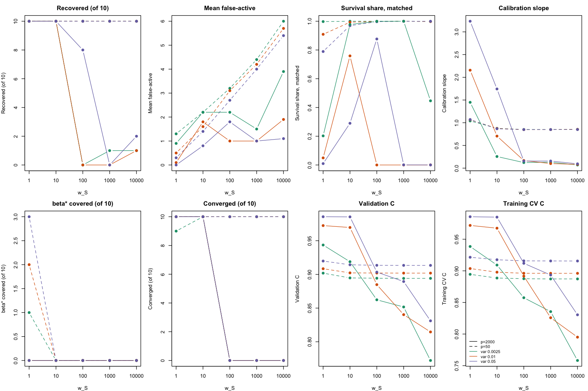
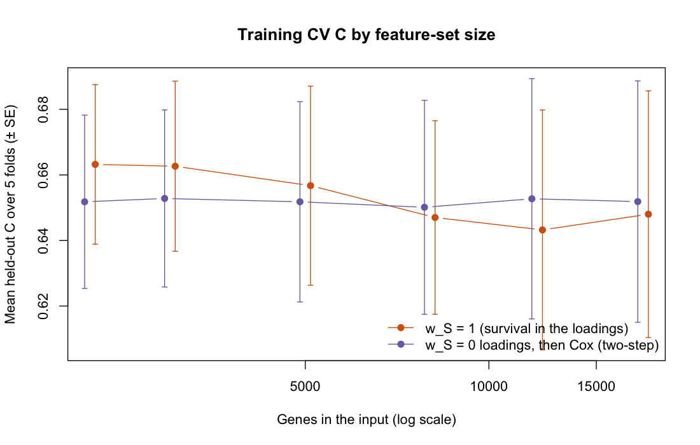
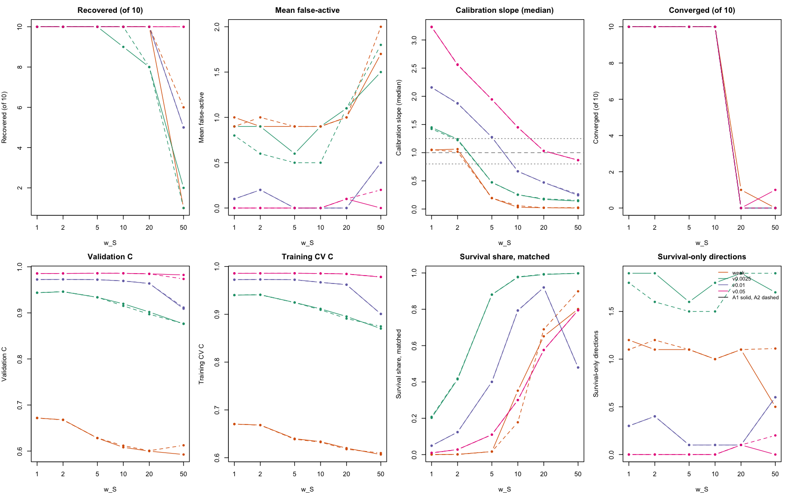
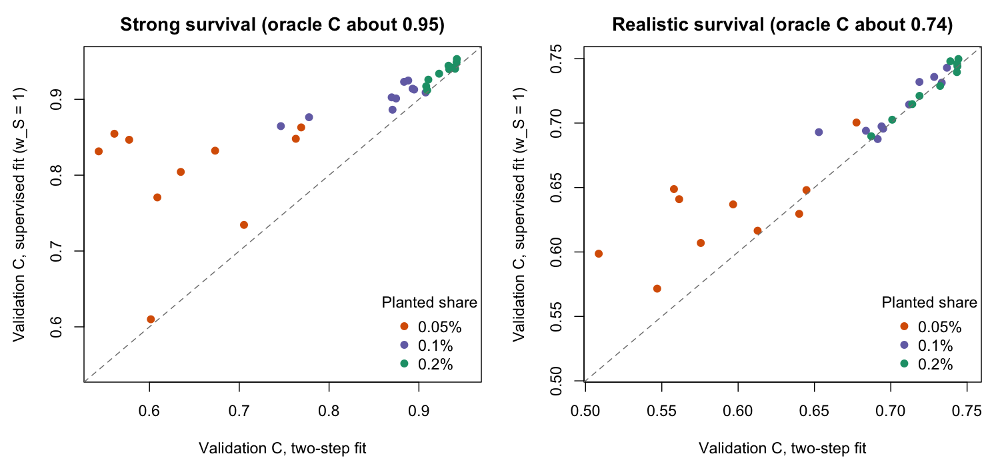

| Weight | Planted variance | Recovered | Reference | Mean false-active | Converged | Qualifies |
|---|---|---|---|---|---|---|
| w_S giving 20% survival share | 0.25% | 2 | 0 | 0.0 | 10 | FALSE |
| w_S giving 20% survival share | 1% | 2 | 0 | 0.0 | 10 | FALSE |
| w_S giving 20% survival share | 5% | 6 | 1 | 0.0 | 10 | TRUE |
| w_S = 1 | 0.25% | 10 | 0 | 0.9 | 10 | TRUE |
| w_S = 1 | 1% | 10 | 0 | 0.1 | 10 | TRUE |
| w_S = 1 | 5% | 10 | 1 | 0.0 | 10 | TRUE |
| w_S = 10 | 0.25% | 10 | 0 | 2.2 | 10 | FALSE |
| w_S = 10 | 1% | 10 | 0 | 1.8 | 10 | FALSE |
| w_S = 10 | 5% | 10 | 1 | 0.8 | 10 | TRUE |
| w_S = 100 | 0.25% | 0 | 0 | 2.2 | 0 | FALSE |
| w_S = 100 | 1% | 0 | 0 | 1.0 | 0 | FALSE |
| w_S = 100 | 5% | 8 | 1 | 1.8 | 0 | FALSE |
14 November 6, 2026
This chapter covers the week of November 2–6. It starts with an executive summary, then the issues that were resolved (the derivation review and the October 26 review in GitHub issue #6), then the supervision experiments in order, and ends with open items.
14.1 Executive summary
Where things stand. The working model is the supervised YFB fit with survival weight w_S = 1 on the 2,218-gene set, seven programs, and no pruning. Its derivation now matches the code. On five external PDAC cohorts it predicts as well as the best alternatives we tested, including DeSurv, with no significant difference in either direction. In simulation, supervision earns its place near the detection threshold, where it finds prognostic programs that the two-step approach misses. On the real data, survival still does not change the gene programs.
Key progress this week
The model is now documented correctly. The YFB and LB derivations were rewritten as single documents and checked term by term against the code (88 numerical checks). Writing them found and fixed a sign bug in LB. It also led to removing a post-fit sign flip that could hide failed fits, and to adding fold-in prediction for LB.
Supervision helps where it is supposed to. When a prognostic program is too weak for the factorization to find on its own (0.05% of expression variance), the supervised fit recovers it in 5 of 10 simulated datasets, against 0 for the two-step fit, and validation C is 0.156 higher. Where the program is easy to find, the two approaches tie.
The survival weight is chosen from the data. Cross-validation picks a weight between 1 and 10 in simulation, larger when the signal is stronger. It never picks a weight at which the fit breaks. On the real data the curve is flat from 1 to 50, so the weight stays at 1.
The supervised model holds up against the comparators. The table below gives external results for scores trained on the same 273 patients. Every paired interval includes zero.
Model Mean external C Supervised minus model (95% donor-bootstrap CI) Supervised YFB ( w_S = 1)0.620 Elastic-net Cox on genes 0.619 +0.001 (−0.015 to +0.018) DeSurv 0.614 +0.007 (−0.017 to +0.030) Two-step (unsupervised programs, then Cox) 0.613 +0.007 (−0.003 to +0.017) PurIST subtype score 0.599 +0.021 (−0.013 to +0.057) Review issue #6 is nearly closed. Six of the eight items are resolved:
- the KL bug, followed by pruning reruns;
- the double log;
- risk direction fixed on training data in every runner;
- external-cohort uses listed, with donor-level resampling;
- the comparators;
- writeup numbers computed from saved results.
The Linux check and storing the fits on Longleaf remain.
Risk groups and programs are now reported in a transferable way. One cutpoint, chosen on the training patients, splits every external cohort into high and low risk. The high-risk group is richer in Basal-like and permCAF tumours in every cohort. A rule that combines effect size, share of the risk score and stability across folds names two main prognostic programs. False-active programs carry at most 1.3% of the risk score where the true program is found.
Deliverables are updated, and the branch is merged into main:
- the revised prelim Chapter 4 (229-page prelim, assembly tests passing);
- the November 6 writeup;
- this chapter;
- the status documents.
What did not work, and what is next
- Pruning. Even with the bug fixed, pruning removes the planted program (2 of 20 recovered), so the model keeps all seven programs.
- Stronger supervision. Survival would only move the real-data gene programs at weights near 10⁴, the scale DeSurv uses. Above about 40 the fit stops converging, so keeping it stable at large weights is the main open methods problem.
- Measurement errors. Two errors in last week’s simulation numbers came from the default tie handling in the Cox fit. They are corrected throughout.
- Next:
- large-weight stability;
- a registered LB vs YFB comparison on the nonnegative input, which projection-only centering now allows;
- completing the simulation check of the program rule.
14.2 Rashid Lab Meeting Update (November 5th, 2026)
To be filled in.
14.3 Key issues resolved
14.3.1 Derivations reviewed against the code
The model derivations had been spread over pieces written between March and October. Some of those pieces disagreed with each other or with the code. This week they were reorganized and checked.
- Folder layout.
derivations/is now organized by model:SSBMF-YFB-model-derivations/,SSBMF-LB-model-derivations/,SSBMF-YFB-multimodal-model-derivations/,SSBMF-LB-vs-YFB-comparison/andearly-work/.derivations/README.mdmaps the old names to the new ones. - One YFB derivation.
SSBMF-YFB-model-derivation-full.texderives the whole model in one place:- the objective with the survival weight and the Cox approximation;
- every update;
- initialization, convergence, pruning and prediction;
- the balance between expression and survival information in the loading update;
- an errata table against the April pieces.
verify_derivation.Rchecks each update’s terms against a brute-force evaluation of the objective and against the code (47 checks, now 73 with projection centering). The April formulas for two survival terms fail these checks, as expected. - LB and YFB side by side.
SSBMF-LB-vs-YFB-comparison.texsets the two models’ updates next to each other. It shows how the survival share of the loading update scales with the number of genes and with a program’s variance share, and it compares both with DeSurv. Its recommendation is to keep YFB as the primary model, because new patients are scored exactly by projection, and to keep LB as an alternative. - LB fixes. The LB post-fit sign check used the concordance in the wrong direction, so it flipped 8 of 8 correctly oriented fits and discarded the variance of β. It is fixed, and saved LB risk scores from earlier default runs have the opposite sign. The post-fit sign flip was then removed from both fitters. A converged fit is already oriented, so a flip could only hide a failed fit.
- LB fold-in prediction. New patients’ LB loadings are now estimated with the training update minus the survival term (
predict_ssbmf_lb_foldin()), following Yusha’s note. In eight simulated splits it recovered test loadings better than least-squares projection (mean |r| 0.949 against 0.909). - Matched LB and YFB comparison (exploratory). On 12 small planted datasets at matched survival weights, YFB reached test C 0.78–0.79 against an oracle of 0.790. LB reached 0.72–0.76 at the lower weight and lost at least one planted program in every fit (
docs/findings/2026-11-06-lb-yfb-matched-comparison-findings.md). - New opt-in derivations. The survival-block weight and the joint posterior for β are derived in
components/survival_block_weight/. Projection-only centering, which lets the model take nonnegative input with centering only inside the Cox projection, is a new section of the full YFB derivation. Withstrata_idit centers within each cohort, since the stratified Cox likelihood ignores a per-cohort constant. All three are opt-in and leave the default fit unchanged.
14.3.2 GitHub issue #6 (the October 26 review)
Naim’s review listed eight items. The table gives their state on fix/yfb-supervision.
| Item | State | What was done, or what is left |
|---|---|---|
| 1. KL normalizer in the loading update | Fixed in the code (31db892, exact-KL test). Rerun on 11/6 (first pruning simulation, 0fb8aba): without pruning the fit recovers the planted program in 17 and 19 of 20 datasets, as before. With pruning, ordinary or protected, it recovers 11 of 20. |
Pruning still loses the planted program. The first pruning simulation found that an empty program’s KL term came out slightly positive instead of zero. That was fixed (f3263d6), and the repeat after that correction makes it plain: with pruning the fit recovers the program in only 2 of 20 datasets, against 17 and 19 without. The working fit stays at K = 7 without pruning (docs/findings/2026-11-06-flat-beta-pruning-rerun-findings.md). |
| 2. Double log₂ on RNA-seq | Fixed (6a0b96f). Single-log refit: external C 0.625 against 0.627, and 5 of 5 CV folds converge instead of 2. |
The circulated writeup still shows double-log numbers. The next writeup uses single-log numbers throughout. |
| 3. BO-T12 collapse on Linux | Open. Not reproducible on macOS. | Needs a Linux run (Longleaf, or Docker, which is not installed here). |
| 4. Report the October 15 null result | Recorded in DECISIONS.md, not yet in a writeup. | Goes into the next writeup and the revised prelim Chapter 4. |
| 5. Fair comparison and risk orientation | Orientation fixed in both named scripts (b85d390). No reported C value changed. |
The other runners that oriented with max(C, 1 − C) were fixed on 11/6 (ea142a6). Rescoring from saved scores reproduced every number that could be checked, including the rank-matched pooled ΔC of 0.0105 (−0.0125 to 0.0329) (docs/findings/2026-11-06-orientation-audit.md). The next writeup leads with this rank-7 comparison. |
| 6. External-cohort uses and shared donors | Done on 11/6 (356347f). Every decision that looked at external outcomes is listed with its record (docs/findings/2026-11-06-external-cohort-uses.md). Resampling donors instead of records leaves the pooled gain in the external scoring at +0.007 with interval −0.003 to +0.017, which still includes zero. |
Keep one cohort untouched by any future choice. |
| 7. Comparators (PurIST, DeSurv, elastic-net Cox, clinical) | Open. | A real-data comparator runner, next after the supervision decision. |
| 8. Reproducible writeup | Test baselines are stored as fixtures (1703bc6). |
The 11/6 writeup now computes its numbers from saved CSVs (41c457c), as this chapter’s new sections do. The fits still need to be stored on Longleaf with the path recorded. |
14.3.3 Corrections to the simulation measurements
Two numbers in last week’s simulations were wrong for the same reason. survival::coxph() merges survival times that are equal to within a small tolerance. The simulated times span many orders of magnitude, so near-equal times were treated as ties.
- Validation calibration slopes in the fixed-weight simulation. These were reported as 0.18 to 1.20. With exact times they are 1.45 to 3.23, so the supervised coefficients were attenuated, not overconfident.
- The two-step comparison fits in the cross-validated-weight and near-threshold simulations. Their training Cox fits were attenuated, which gave slopes of up to 12.7. With exact times the slopes are 0.96 to 1.16. The near-threshold verdict did not change.
All simulation runners now use exact times.
14.4 Attempts to resolve model supervision
14.4.1 Joint YFB on pooled PDAC
The October canonical YFB fit used survival feedback in the gene-weight updates (w_S = 1) and retained two survival-active programs. We compared it with rank-7 unsupervised EBMF on the same 2,064 genes from 273 pooled TCGA and CPTAC patients. We used EBMF alone to compare programs, and EBMF followed by Cox to compare prediction.
A fresh replay of the October code (be57fe9) reproduced the archived loadings, coefficients, and external risk scores exactly. It converged in 244 iterations. With the same historical preprocessing and gene set, the current fitter reached the 300-iteration cap. It retained nonzero coefficients (programs 2 and 3 had means +0.333 and −0.206) and averaged external C of 0.620. Applying only the later Gaussian log-normalizer correction (31db892) to the October code reproduced the current replay’s loadings, coefficients, and monitored objective exactly. The correction changed when the relative-objective stopping rule was satisfied. The comparison below uses the archived October fit.

Across the five external cohorts, mean C was 0.621 for joint YFB and 0.623 for EBMF followed by Cox. The paired difference was −0.002 (95% bootstrap interval −0.012 to +0.006). We checked that the archived survival times and event indicators matched in order and used the saved risk directions. The bootstrap resampled rows within each cohort and weighted cohorts equally. Its interval is conditional on these trained models and assumes independence across cohorts. The saved records do not contain patient identifiers for checking overlap across cohorts.

| Joint program | Cox coefficient (posterior SD) | Best EBMF score correlation, absolute | EBMF span R² | Exploratory annotation of risk-associated genes |
|---|---|---|---|---|
| 2 | +0.350 (0.086) | 0.993 | 99.9999% | DeSurv basal-like tumor signature, 39 of the top 100 genes |
| 3 | −0.185 (0.075) | 0.975 | 99.9997% | Bailey squamous signature, 12 of the top 100 genes |
The signed gene weights also closely match the corresponding EBMF programs (Pearson correlations 0.991 and 0.976 for programs 2 and 3).
The genes below are ordered by loading multiplied by the sign of the Cox coefficient. For program 3, this ranks the negative loadings toward higher predicted risk.
| Program | Top eight genes toward higher predicted risk |
|---|---|
| 2 | SLC16A3, ITGA3, LDHA, SLC2A1, ALDOA, PGK1, P4HA1, PFKP |
| 3 | NCAPD2, MT2A, RPL17, EEF1D, PEG10, ANGPTL4, MT1X, CAV1 |
Program 2’s basal-like signature includes prominent glycolysis-associated weights. Program 3’s risk-associated end overlaps the Bailey squamous signature. Both overlaps passed an exploratory Benjamini–Hochberg adjustment across nine signatures and two programs, with the 2,064 training genes as background. These annotations require independent validation. The fitted shared point-Laplace prior put approximately \(5.7 \times 10^{-7}\) mass on the spike. The two active labels use the posterior mean-to-SD rule, so they give no evidence that the fitted spike pruned the other coefficients.
Interpretation. Joint YFB learned survival-associated programs with similar observed discrimination to the two-step model. On these training patients, EBMF already represented almost all the score variation in both survival-active programs. This fit therefore gives little evidence that joint fitting recovered a low-variance prognostic score outside the EBMF span. The calibrated October simulation provides evidence for that capability under its planted design.
14.4.1.1 Planted low-variance prognostic program
The calibrated October simulation used 400 training subjects and a strong planted survival coefficient (log-hazard coefficient 3.3). Recovery required an absolute loading correlation of at least 0.7 and the correct survival direction after sign alignment.

| Noise | Maximum planted expression variance share | Recovery, feedback off / joint | Mean validation C, off / joint | Joint converged |
|---|---|---|---|---|
| 0.25 | 0.49% | 1/20 / 17/20 | 0.641 / 0.763 | 19/20 |
| 1.00 | 0.04% | 1/20 / 19/20 | 0.540 / 0.765 | 19/20 |
At noise 1.00, the joint mean C uses 19 defined values. One replicate had undefined validation C. The feedback-off reference is historical YFB with a fitted survival coefficient and no survival feedback into the gene weights. The joint arm also changes initialization and priors. This simulation supports low-variance program recovery under the tested design. The later larger-feature evaluation failed its combined recovery, false-active and convergence gate.

The recovery plot shows one near miss at low noise and a wider gap for the other supervised failures. At high noise, the single missed program had a loading correlation of about 0.23.

In the matched comparator rerun, none of the four comparator methods met its recovery criterion at either noise level. EBMF alone selects its closest loading by correlation with the planted program and has no risk score. The two-step methods select a program by absolute Cox z-statistic and also require the correct survival direction for recovery. At high noise, EBMF followed by lasso Cox had defined concordance in 6 of 20 datasets. Its plotted mean describes those six datasets.
The close PDAC program matches are consistent with weak effective survival feedback. The prediction comparison alone cannot establish that explanation. The existing training-only weight grid found that higher weights can destabilize the fit, so a stronger feedback setting should be evaluated on recovery, false activity and convergence together.
Expression and methylation extension. First verify that the multimodal fitter at M = 1 reproduces the single-modality reference under matched settings. For M = 2, use shared patient scores and separate expression and methylation loadings, feature precisions, and loading priors. The existing implementation sums the modality projections before computing the Cox predictor \(\eta = (\sum_{m=1}^{M} Y^{(m)} F^{(m)})\beta\). Check each block’s contribution to the combined score and validate prediction on patients with matched modalities, using training-only choices for priors and rank.
14.4.2 Survival weight at 2,000 genes (simulation)
The October 30 gate failed for the new opt-in fitter. We then tested the canonical fitter’s survival weight w_S on the same corrected simulation grid. The difference from the earlier run of that fitter on this grid is the input. The canonical fitter has signed loading priors and no gene intercept, so it now gets the per-cohort z-scored matrix instead of the nonnegative uncentered one. Weights ran from 1 to 10,000, plus w_S = p/50 and a weight set to give survival 20% of the loading precision.
At w_S = 1 the fit passes the registered gate. At 2,000 genes it recovers the planted program in 10, 10, 10 of 10 datasets in the three variance cells, against 0, 0, 1 for the unsupervised reference. Mean false-active counts are 0.9, 0.1, 0.0, and every fit converges. On the uncentered input the same weight gave false-active counts of 1.0 to 1.5, which would have failed the gate.
Training cross-validation chooses w_S = 1 in most datasets, so the weight can be set without the planted truth:
| Genes | Planted variance | Datasets | Weight chosen (datasets) | Recovered | Mean false-active | Converged |
|---|---|---|---|---|---|---|
| 50 | 0.25% | 10 | w_S = 1 in 10 | 10 | 1.3 | 9 |
| 2000 | 0.25% | 10 | w_S = 1 in 10 | 10 | 0.9 | 10 |
| 50 | 1% | 10 | w_S = 1 in 10 | 10 | 0.5 | 10 |
| 2000 | 1% | 10 | 20% survival share in 2, w_S = 1 in 8 | 9 | 0.1 | 10 |
| 50 | 5% | 10 | w_S = 1 in 10 | 10 | 0.3 | 10 |
| 2000 | 5% | 10 | 20% survival share in 1, w_S = 1 in 7, w_S = 10 in 2 | 10 | 0.0 | 10 |
Larger weights hurt. At 2,000 genes no fit with w_S of 40 or more converges within 300 sweeps, and recovery collapses. Reconstruction stays bounded and the noise precision does not fall, so this is not the earlier reconstruction failure. Its cause is not yet identified. At 50 genes every weight recovers the program, but false activity rises with the weight. Survival’s share of the loading precision at w_S = 1 drops from about 0.8 to 1.0 at 50 genes to between 0.01 and 0.2 at 2,000 genes. Recovery does not drop with it, so the weight does not need to scale with the number of genes.

One problem remains, and it is the opposite of what an earlier draft of this section said. At 2,000 genes the supervision at w_S = 1 is too weak for out-of-sample risk. The median validation calibration slopes are 1.45, 2.16, 3.23 across the three cells, against about 1 for the true predictor. A slope above 1 means the fitted risk differences are too small. The fitted risk score has a third to a half of the true predictor’s spread, and no 95% interval covers the true projected coefficient. Patient ranking is unaffected, with validation C of 0.94 to 0.99. A weight of 10 is closer to calibrated at the two larger planted variances, and weights of 100 or more overfit, with slopes near 0.1. The earlier draft computed the slope with the default tie correction of the Cox fit, which merges the extreme simulated survival times and flattened every slope, including the true predictor’s. The slopes here use exact times.
The next question is therefore how to set the supervision strength from the data while keeping the fit stable. A calibrated power on the Cox likelihood (SafeBayes or the Holmes–Walker calibration), downweighting the genomics term, and normalizing the two likelihood terms as DeSurv does are the candidates.
A rerun of the October 15 test bed at w_S = 1 recovered the program in 18 of 20 datasets at low noise and 19 of 20 at high noise. The recovered datasets match the October 30 run. Sweep counts differ because of the later log-normalizer correction to the objective, which changes when the stopping rule fires.
The real-data training CV at w_S = 1 is registered and running. It covers the programs, cross-validated C, a feature-set-size curve from the 2,218-gene set (genes ranked by per-cohort mean and variance, chosen without using outcomes) to all 17,900 shared genes, and a comparison with survival screening. No external cohort is scored until those choices are fixed.
14.4.3 Survival-weighted fit on the training patients
We fit the w_S = 1 model on the 273 TCGA and CPTAC training patients with five-fold cross-validation, using the single-log data and no external cohort. On the 2,218-gene set the mean held-out C is 0.663 (SE 0.024). The two-step fit, which takes the unsupervised loadings and then fits Cox on the program scores, gives 0.652. The paired fold difference is 0.011 (SE 0.005).
The loadings of the two fits are the same. On these data survival supplies about 10⁻⁸ to 10⁻⁶ of the loading precision. The real coefficients are small, and that share scales with E[β²]. The real programs also explain much more expression variance than the simulated one, so their genomics precision is large. The small gain comes from estimating β jointly with a shrinkage prior. In the simulation, fixed weights of 40 or more broke convergence. Getting survival to move the real-data loadings therefore needs a supervision strength set from the data.
| Program | β | SD | Active | Top genes, positive pole | Top genes, negative pole |
|---|---|---|---|---|---|
| 2 | -0.41 | 0.08 | TRUE | ATP2A3 ACACB METTL7A ADH1B ACSS1 | LOXL2 MMP14 P4HA1 LDHA SLC16A3 |
| 3 | 0.22 | 0.07 | TRUE | RPS7 RPL6 NCAPD2 EEF1D MT2A | KIAA1211 SYTL2 CTSE TSPAN8 TOX3 |
| 5 | 0.23 | 0.08 | TRUE | UHMK1 ARHGAP5 TAOK1 RAD21 DDX21 | CHPF RCN3 MXRA8 LOXL1 JUND |
| 4 | 0.15 | 0.08 | FALSE | CTRB2 CTRB1 CPB1 REG1B CELA3A | BANK1 STK17B EMB MS4A1 CD79A |
| 7 | -0.05 | 0.06 | FALSE | ANO1 BCL9L PPL VSTM2L ALS2CL | PRDX4 PPIB NUCB2 P4HB RPS18 |
A positive β means a higher program score raises the hazard. Three programs are survival-active: a hypoxia and glycolysis versus normal-pancreas axis, a ribosomal and proliferation versus classical-epithelial axis, and a third adverse program.
Adding genes beyond the 2,218-gene set does not help. Mean C ranges from 0.643 to 0.663 from 2,218 to all 17,900 shared genes, and every size is within one SE of the others. The registered rule, which picks the smallest set that matches the all-genes fit, chooses the 2,218-gene set.

Screening genes on survival inside each fold before the joint fit gives no consistent gain:
| Genes | Fit | C, outcome-free screen | C, Cox screen | Difference | SE | Overlap |
|---|---|---|---|---|---|---|
| 250 | Two-step | 0.626 | 0.647 | 0.021 | 0.018 | 0.114 |
| 500 | Two-step | 0.645 | 0.650 | 0.004 | 0.017 | 0.224 |
| 1000 | Two-step | 0.647 | 0.648 | 0.001 | 0.006 | 0.442 |
| 250 | Supervised (w_S = 1) | 0.638 | 0.641 | 0.003 | 0.016 | 0.114 |
| 500 | Supervised (w_S = 1) | 0.637 | 0.646 | 0.009 | 0.009 | 0.224 |
| 1000 | Supervised (w_S = 1) | 0.643 | 0.655 | 0.012 | 0.011 | 0.442 |
No screened set beats the w_S = 1 fit on all 2,218 genes. With survival permuted in the simulated data, the w_S = 1 fit has 0.1 to 0.5 false-active programs per dataset on average, below the limit of one. The fixed model for the single external scoring is therefore w_S = 1 on the 2,218-gene set with no survival screen.
14.4.4 External scoring of the fixed fit
The fixed w_S = 1 fit on the 2,218-gene set was scored once on the five external cohorts, after per-cohort z-scoring. The two-step fit was scored alongside it. Nothing was chosen from these results.
| Cohort | n | Events | C, w_S = 1 | Lower | Upper | C, two-step | Difference | Slope, w_S = 1 | Slope, two-step |
|---|---|---|---|---|---|---|---|---|---|
| Dijk | 90 | 81 | 0.584 | 0.513 | 0.658 | 0.567 | 0.018 | 0.553 | 0.353 |
| Moffitt_GEO_array | 123 | 83 | 0.537 | 0.459 | 0.611 | 0.531 | 0.007 | 0.356 | 0.276 |
| PACA_AU_array | 63 | 38 | 0.656 | 0.562 | 0.751 | 0.656 | 0.000 | 0.782 | 0.728 |
| PACA_AU_seq | 52 | 31 | 0.681 | 0.579 | 0.780 | 0.671 | 0.010 | 1.569 | 1.263 |
| Puleo_array | 288 | 181 | 0.644 | 0.599 | 0.686 | 0.643 | 0.001 | 0.988 | 0.799 |
Mean external C is 0.620 for the survival-weighted fit and 0.613 for the two-step fit. The supervised fit is equal or higher in every cohort. The cohort-stratified paired difference is +0.007 (95% interval -0.002 to 0.017), about the size of the training CV difference. The earlier frozen benchmark averaged 0.627 under the older preprocessing, so performance is about the same. Calibration slopes on the external cohorts range from 0.36 to 1.57, with 0.99 in Puleo, the largest cohort, and they are closer to 1 for the supervised fit than for the two-step fit in every cohort.
14.4.5 Choosing the survival weight by cross-validation (simulation)
The fixed-weight simulation left two problems. At w_S = 1 the coefficients were attenuated, and weights of 40 or more stopped converging. In the original objective, raising w_S also weakened the prior on β, because the weight multiplied the Cox term in the β update too. The survival-block weight (the block-weighted fit) applies w_S to the Cox term and to the KL term for β (the β prior) together. β then gets an ordinary Bayesian Cox fit while the loadings see survival at weight w_S. This is the same as down-weighting the expression likelihood by 1/w_S. The joint-posterior fit adds a joint Gaussian posterior for β, with each program’s prior variance estimated from the data. Each dataset’s weight was chosen from {1, 2, 5, 10, 20, 50} by five-fold cross-validated partial log-likelihood on the training data.
| Fit | Planted variance | Chosen weights (datasets) | Recovered | Two-step recovered | False-active | Two-step false-active | C | Two-step C | Slope | Two-step slope |
|---|---|---|---|---|---|---|---|---|---|---|
| Block-weighted | 0.25% variance | w_S = 1 in 1, w_S = 2 in 9 | 10 | 10 | 0.9 | 1.7 | 0.946 | 0.939 | 1.240 | 1.159 |
| Joint-posterior | 0.25% variance | w_S = 2 in 10 | 10 | 10 | 0.6 | 1.7 | 0.946 | 0.939 | 1.222 | 1.159 |
| Block-weighted | 1% variance | w_S = 5 in 10 | 10 | 10 | 0.0 | 0.9 | 0.972 | 0.972 | 1.274 | 1.097 |
| Joint-posterior | 1% variance | w_S = 5 in 10 | 10 | 10 | 0.0 | 0.9 | 0.972 | 0.972 | 1.276 | 1.097 |
| Block-weighted | 5% variance | w_S = 10 in 10 | 10 | 10 | 0.0 | 0.2 | 0.986 | 0.986 | 1.450 | 0.963 |
| Joint-posterior | 5% variance | w_S = 10 in 10 | 10 | 10 | 0.0 | 0.2 | 0.986 | 0.986 | 1.449 | 0.963 |
| Block-weighted | Weak | w_S = 1 in 8, w_S = 2 in 2 | 10 | 10 | 1.2 | 0.5 | 0.671 | 0.668 | 1.047 | 1.039 |
| Joint-posterior | Weak | w_S = 1 in 10 | 10 | 10 | 0.9 | 0.5 | 0.672 | 0.668 | 1.052 | 1.039 |
- The weight choice works. The chosen weight rises with the strength of the planted program: 1 or 2 in the weak and 0.25% cells, 5 at 1%, and 10 at 5%. It never chose 20 or 50. At those weights the full fits stop converging (0 or 1 of 10 per cell).
- Supervision matches the two-step fit on this test bed. Both recover the program in 10 of 10 datasets in every cell, and validation C differs by at most 0.007. The registered gate passed only against the older unsupervised reference, which was fitted to uncentered input. Against the matched two-step fit, the recovery gain is zero.
- The coefficients are still slightly attenuated. Median calibration slopes at the chosen weight are 1.22 to 1.45 in the three variance cells. The registered band was 0.8 to 1.25, met in 1 of 3 cells.
- The joint posterior for β adds nothing measurable (C within 0.004 of the block-weighted fit), so it stays opt-in.
Neither arm passed every registered criterion (the block-weighted fit fails the null check; the joint-posterior fit passes the null check), so nothing was adopted.

14.4.6 Programs near the detection threshold (simulation)
On the fixed-weight simulation’s test bed the two-step fit already finds the planted program, so it cannot show what supervision adds. The near-threshold simulation planted weaker programs, at 0.05%, 0.1% and 0.2% of expression variance, with strong survival (oracle C about 0.94) and realistic survival (oracle C about 0.74). Ten datasets per cell.
| Survival | Planted share | Fit | Recovered (of 10) | Mean |r| | Mean false-active | Validation C | Oracle C |
|---|---|---|---|---|---|---|---|
| realistic | 0.05% | Supervised (w_S = 1) | 0 | 0.338 | 1.9 | 0.630 | 0.740 |
| realistic | 0.05% | Two-step | 0 | 0.200 | 1.6 | 0.592 | 0.740 |
| realistic | 0.1% | Supervised (w_S = 1) | 9 | 0.773 | 1.0 | 0.712 | 0.736 |
| realistic | 0.1% | Two-step | 8 | 0.730 | 1.1 | 0.705 | 0.736 |
| realistic | 0.2% | Supervised (w_S = 1) | 10 | 0.896 | 0.5 | 0.728 | 0.735 |
| realistic | 0.2% | Two-step | 10 | 0.893 | 0.8 | 0.727 | 0.735 |
| strong | 0.05% | Supervised (w_S = 1) | 5 | 0.624 | 2.5 | 0.800 | 0.936 |
| strong | 0.05% | Two-step | 0 | 0.200 | 2.8 | 0.644 | 0.936 |
| strong | 0.1% | Supervised (w_S = 1) | 10 | 0.867 | 1.6 | 0.901 | 0.948 |
| strong | 0.1% | Two-step | 8 | 0.730 | 2.4 | 0.861 | 0.948 |
| strong | 0.2% | Supervised (w_S = 1) | 10 | 0.922 | 1.0 | 0.936 | 0.958 |
| strong | 0.2% | Two-step | 10 | 0.893 | 1.8 | 0.928 | 0.958 |

With strong survival, the supervised fit has the higher validation C in 29 of 30 datasets. The gain grows as the program gets weaker: +0.156 at 0.05%, +0.041 at 0.1% and +0.008 at 0.2%. At 0.05% it recovers the program in 5 of 10 datasets, where the two-step fit recovers none. With realistic survival the two fits are within 0.01 of each other at 0.1% and 0.2%, and neither recovers the 0.05% program. This is the regime the joint model is for. It needs enough survival information, and the gain on real PDAC data, where survival information is closer to the realistic setting, will be modest.
The registered recovery criterion failed because it limited the mean false-active count to 1. The two-step fit fails it too, and the next section shows these programs barely matter for prediction. A fixed weight of 5 recovered more in the strong cells but overfit (slopes 0.04 to 0.65) and lost the program under realistic survival. The weight has to come from the data.
14.4.7 How much the false-active programs contribute
A false-active program is one whose coefficient is more than 1.96 posterior SDs from zero but that does not match the planted program. To see whether they matter, each validation risk score was split into the matched program’s part and the rest. The standardized coefficient is the log hazard ratio per SD of a program’s score.
- Where the planted program is recovered, the other active programs carry at most 1.3% of the risk-score variance. Their standardized coefficients are about 0.1 to 0.3, against 1 to 17 for the matched program, and removing them changes validation C by at most 0.008 (maximum in the cross-validated-weight simulation 0.008).
- Where the program is only partly found (0.05% share), the other programs carry 9% to 69% of the risk-score variance and add to C. They hold pieces of the planted direction. The split is much larger for the two-step fit (69%) than for the supervised fit (8.7%).
For prediction the false actives are negligible. For biology they need filtering. Only programs with a large standardized coefficient relative to the strongest one should be named as prognostic. A rule that combines that ratio, the share of risk-score variance and stability across folds is being tested.
14.4.8 Real-data refit with the survival weight chosen by cross-validation
The same weight choice was applied to the 273 training patients, with weights from 1 to 50 and the training cross-validation folds. A nested cross-validation repeated the choice inside each training split, to give an honest estimate of the whole procedure.
| w_S | CV partial log-likelihood | CV C | SE | Folds converged | Survival share of loading precision |
|---|---|---|---|---|---|
| 1 | -775.168 | 0.663 | 0.024 | 3 | 1.170e-06 |
| 2 | -775.179 | 0.663 | 0.025 | 3 | 2.340e-06 |
| 5 | -775.213 | 0.661 | 0.025 | 4 | 5.910e-06 |
| 10 | -775.244 | 0.661 | 0.025 | 4 | 1.200e-05 |
| 20 | -775.380 | 0.659 | 0.026 | 4 | 2.490e-05 |
| 50 | -775.429 | 0.653 | 0.028 | 4 | 7.257e-05 |
The chosen weight is 1. The curve is flat, changing by 0.26 out of 775 across a fifty-fold range of weights, so the weights chosen inside the nested splits vary (5, 2, 50, 1, 10). The nested C is 0.656 (SE 0.027). By the registered rule nothing changes. The w_S = 1 fit and its external scoring stand.
The reason is the scale of the real data. Survival’s share of the loading precision grows in proportion to the weight but is still below 10⁻⁴ at 50, and every program’s loadings correlate 1.000 with the unsupervised ones. Reaching a share near 0.1 would need a weight of order 10⁴, the same order as DeSurv’s weighting, and in simulation weights of 40 or more stopped converging. On these data the supervised model’s gain comes from fitting β jointly, not from moving the gene programs.
| Program | PVE | β | SD | Active | Standardized β | Risk-variance share | Ratio to largest |
|---|---|---|---|---|---|---|---|
| 2 | 0.106 | -0.405 | 0.084 | TRUE | 0.405 | 0.713 | 1.000 |
| 3 | 0.065 | 0.218 | 0.073 | TRUE | 0.218 | 0.206 | 0.538 |
| 4 | 0.051 | 0.154 | 0.082 | FALSE | 0.154 | 0.103 | 0.380 |
| 5 | 0.038 | 0.230 | 0.082 | TRUE | 0.230 | 0.230 | 0.568 |
The three active programs have standardized coefficients of 0.41, 0.22 and 0.23. All three have at least half the effect of the largest program and carry at least 20% of the risk-score variance. The inactive program 4 (standardized coefficient 0.15) is the borderline case for the proposed rule.
14.4.9 Real-data comparators and DeSurv-style analyses
Both analyses were registered before they were run (comparators plan, DeSurv-style plan). Every comparator was trained on the 273 TCGA and CPTAC patients only, and each score’s direction was fixed on training data. The fixed supervised fit from the training cross-validation and its two-step counterpart were not refitted. Details are in the comparator findings and the DeSurv-style findings.
Comparators. DeSurv used the authors’ code, preprocessing and published settings (rank 3, chosen by the authors on the same two training cohorts), with 100 starts. The registration had named a new training-only search, so this is a deviation. The elastic-net Cox model on the 2,218-gene set chose α = 0 (ridge) by training CV on the same folds. The α = 0.75 and lasso paths hit glmnet’s iteration limit at small λ, which may have favoured the ridge choice. PurIST entered as its training-fitted Cox score. No clinical model was fitted, because no stage, grade, age or margin field is recorded in all seven cohorts.
| Model | Mean C (5 cohorts) | Pooled HR per SD (95% donor-clustered CI) | Supervised minus model (95% donor CI) |
|---|---|---|---|
| Supervised (w_S = 1) | 0.620 | 1.37 (1.22 to 1.53) | |
| Two-step | 0.613 | 1.35 (1.21 to 1.51) | 0.007 (-0.003 to 0.017) |
| PurIST | 0.599 | 1.25 (1.13 to 1.38) | 0.021 (-0.013 to 0.057) |
| Elastic-net Cox (2,218-gene set) | 0.619 | 1.34 (1.20 to 1.49) | 0.001 (-0.015 to 0.018) |
| DeSurv | 0.614 | 1.43 (1.25 to 1.64) | 0.007 (-0.017 to 0.030) |
The supervised fit’s concordance is within noise of DeSurv and of the elastic-net Cox model. Every paired interval includes zero. The comparison is on 616 external records from 568 donors, resampled by donor. It shows no loss against these models and no established gain.
Risk groups. One cutpoint per score was chosen on the out-of-fold training scores (maximally selected log-rank, at least 20% per group) and applied unchanged to every external cohort. The cutpoints were -0.046 (supervised) and 0.526 (two-step) training SDs. The pooled high-versus-low HRs were 1.52 and 1.69 (cohort-stratified, with donor-clustered intervals in the findings). The two HRs are not comparable. The supervised cutpoint puts 297 of 616 external records in the high-risk group, and the two-step cutpoint puts 144. A smaller, more extreme high-risk group gives a larger HR even when two scores rank patients equally well, as the continuous HRs above show. In every cohort the high-risk group held more Basal-like (PurIST) and more permCAF (DeCAF) tumours. The supervised score kept a pooled HR of 1.48 per training SD after adjusting for PurIST subtype and 1.40 after adjusting for DeCAF.
Larger unsupervised ranks. EBMF with Cox regression on its program scores gave supervised-minus-EBMF differences of 0.007, 0.045, 0.040 at ranks 7, 15 and 40. The rank-7 interval includes zero. At ranks 15 and 40 the unpenalized Cox step overfits (external calibration slopes 0.10 to 0.49), so those differences describe that pipeline rather than the information in a larger factorization.
Program classification rule. A main prognostic program needs a standardized coefficient at least 0.25 of the largest, at least 5% of the (signed) risk-score variance and activity in at least four of the five training cross-validation folds.
| Program | Active | Ratio to largest | Signed variance share | Active folds | Main program | PVE | Survival precision share (upper bound) |
|---|---|---|---|---|---|---|---|
| 2 | TRUE | 1.00 | 0.632 | 5 | TRUE | 0.106 | 7.9e-07 |
| 3 | TRUE | 0.54 | 0.179 | 4 | TRUE | 0.065 | 6.3e-07 |
| 4 | FALSE | 0.38 | -0.010 | 0 | FALSE | 0.051 | 5.4e-07 |
| 5 | TRUE | 0.57 | 0.202 | 3 | FALSE | 0.038 | 2.1e-06 |
| 7 | FALSE | 0.12 | -0.003 | 1 | FALSE | 0.027 | 3.4e-07 |
Programs 2 and 3 meet the rule. Program 5 meets the coefficient and variance thresholds but is active in only three folds. No program is survival-dominated: the upper bound on survival’s share of the loading precision is below 10⁻⁵ for every program. The old label (active with PVE below 1%) also marks none. In the saved simulation fits the coefficient-and-share part of the rule kept the planted program in all 80 fits in the cross-validated-weight simulation and rejected 35 of 36 false-active directions. In the near-threshold two-step fits it rejected only 61 of 128 false-active directions, and the supervised near-threshold fits could not be checked. The fold-stability part could not be checked in any simulation.
Mixed-signal simulation. One strong and one near-threshold prognostic program were planted together at 2,000 genes (10 datasets per arm).
| Arm | Near-threshold recovered | Top-50 gene precision | Validation C |
|---|---|---|---|
| Two-step | 9/10 | 0.826 | 0.731 |
| Supervised, w_S = 1 | 9/10 | 0.858 | 0.735 |
| Supervised, joint β, w_S = 1 | 9/10 | 0.860 | 0.734 |
| Supervised, w_S = 5 | 2/10 | 0.346 | 0.667 |
All arms recovered the strong program in every dataset. At w_S = 1 the supervised and two-step fits recovered the near-threshold program equally often. A fixed w_S = 5 lost it in most datasets and had lower validation C. This compares two fixed weights and does not test the cross-validated choice.
14.5 Open items and questions
- Stronger supervision on real data. Moving the real-data loadings needs weights near 10⁴. That first needs the fit to stay stable at large weights, the problem the fixed-weight simulation found and did not solve.
- Classifying programs for the biology. The rule names programs 2 and 3 on real data. Its fold-stability part has not been checked in simulation, because the saved simulation fits have no fold-level program identities.
- Unequal risk groups. The registered cutpoints give high-risk groups of different sizes, so group HRs cannot rank the two scores. Continuous HRs and paired C are the comparison.
- Pruning. With the empty-program KL fixed, pruning removes the planted program in nearly every dataset. The working fit stays at K = 7 without pruning. Whether a different deletion rule can work is a separate question.
- Issue #6. The comparators (item 7) and the writeup and prelim text (items 2, 4 and 5) are done. Still open: storing the fits (item 8) and the Linux check (item 3). A clinical-covariate model was not possible under the registered rule.
- Matched LB and YFB study. It now has the nonnegative input it needs, with projection-only centering (including within strata).
- Writing. The prelim Chapter 4 revision and the 11/6 writeup are complete and include these comparisons.